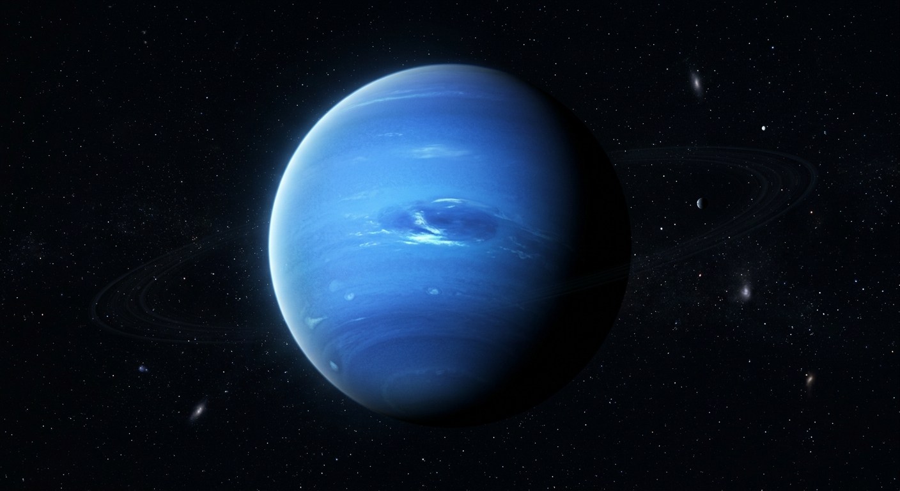

Netuno é o oitavo planeta a partir do Sol.
Netuno é classificado como um gigante de gelo.
Netuno possui uma aparência azulada.

Netuno possui alguns dos ventos mais rápidos já observados entre os planetas do Sistema Solar. Eles podem atingir velocidades superiores a 2.000 km/h.
Além dos ventos intensos, o planeta apresenta grandes tempestades em sua atmosfera, tornando Netuno um dos mundos mais dinâmicos do Sistema Solar.
Netuno possui um diâmetro de aproximadamente 49.244 km, sendo quase quatro vezes maior que o diâmetro da Terra.
Netuno leva aproximadamente 165 anos terrestres para completar uma volta ao redor do Sol. Já um dia no planeta dura cerca de 16 horas.